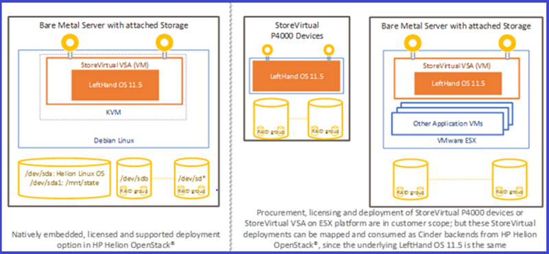
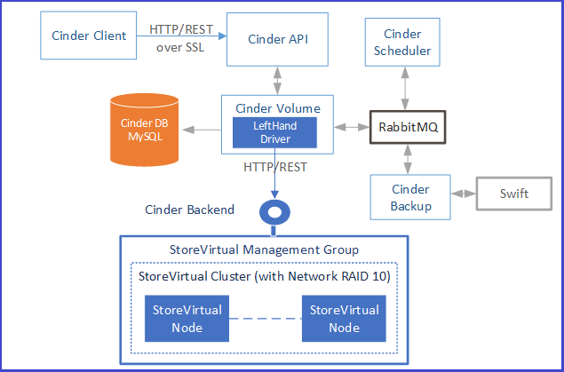
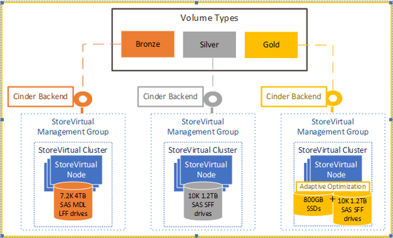
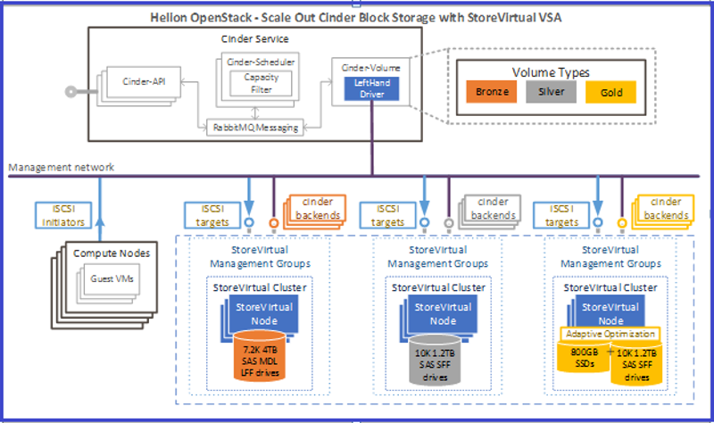

HP Helion OpenStack® 1.0 Cinder Block Storage Using HP StoreVirtual VSA
HP Helion OpenStack bundles and facilitates deployment of HP StoreVirtual VSA which can be configured as backend for OpenStack Cinder Block Storage.
This page provides detailed information on using HP StoreVirtual VSA for realizing cloud storage.
- HP StoreVirtual VSA overview
- Cinder Architecture
- Scale Out Cinder Block storage with StoreVirtual VSA
- Next Steps
HP StoreVirtual VSA overview
HP StoreVirtual VSA Software is a Virtual Storage Appliance that provides the complete array functionality on top of Linux KVM environment without an external array hardware. It transforms your server's internal or direct-attached storage into a fully featured shared storage array&mdashwithout the cost and complexity associated with dedicated storage. HP StoreVirtual VSA uses scale-out, distributed clustering to provide a pool of storage with enterprise storage features and simple management.
Multiple StoreVirtual systems running on different servers create a clustered pool of storage with the ability to make data highly available by protecting volumes with network RAID. A logical grouping of clusters is done in order to form a unit and is called a management group. Each cluster can be treated as storage node by hypervisor and is accessed using VIP (virtual IP).
With Network RAID, blocks of data are striped and mirrored across multiple StoreVirtual systems, allowing volumes and applications to stay online in the event of disk, storage subsystem or server failure. iSCSI connectivity on HP StoreVirtual VSA, support the use of the storage pools by cloud instances. A single management group can contain up to 32 StoreVirtual nodes - grouped into clusters. A single cluster comprises 1 to 16 StoreVirtual nodes. Each management group can optimally manage a maximum of 1500 volumes.
HP Helion OpenStack supports multiple clusters. For minimal deployment, you can create a management group with one cluster and with a single StoreVirtual node on it.
HP StoreVirtual VSA enables the following features in HP Helion OpenStack:
Storage clustering: It allows you to consolidate multiple storage nodes into pools of storage. The available capacity and performance is aggregated and made available to every volume in the cluster. As storage needs increase, StoreVirtual can scale performance and capacity online.
Data availability: Network RAID strips and mirrors multiple copies of data across a cluster of storage nodes, eliminating any single point of failure in the StoreVirtual SAN. Applications have continuous data availability in the event of power, network, disk, controller, or entire storage node failure.
Thin provisioning: It allocates space only as data is actually written without requiring pre-allocation of storage. This raises the overall utilization and efficiency and thus increases the Return on Investment(ROI).
Simplified data protection: Snapshots create thinly provisioned, instant point-in-time copies of data on a per-volume basis. As an administrator, you can access snapshots to recover individual files/folders from the volume, or rollback an entire volume to a prior state.
Centralized Management Console (CMC): Multiple data centers and sites can be managed from an all inclusive "single pane-of-glass." All StoreVirtual SAN features are managed from the Centralized Management Console (CMC) for simple, easy-to-manage storage.
HP StoreVirtual Deployment Models supported in HP Helion OpenStack
The following diagram displays the different development platforms supported in HP Helion OpenStack.

There are three supported models for deploying StoreVirtual in HP Helion OpenStack:
- You can deploy and configure dedicated HP StoreVirtual VSA Storage nodes using the HP Helion OpenStack TripleO/Heat-based Installer. Licenses for these VSA nodes are included for use from HP Helion OpenStack Compute Cloud Nodes only.
- User deploys and configures StoreVirtual VSA in VMware ESX platform, and maps these to Cinder backends. Licenses for these must be separately procured and are not included with HP Helion OpenStack.
- User installs StoreVirtual P4000 devices rather than using StoreVirtual VSA. These devices must be separately procured and are not included with HP Helion OpenStack.
Cinder architecture
Cinder is the block-based storage component of the HP Helion OpenStack platform for cloud computing. It facilitates the provisioning of storage in the form of block devices known as Cinder volumes. In the most common scenario, the Cinder volumes provide persistent storage to guest virtual machines (known as instances) that are managed by OpenStack Compute software. Cinder is based on the distributed architecture which can scale horizontally and serve concurrent volume management requests.
Cinder consists of three basic services:
Cinder API
Cinder scheduler
Cinder volume along with an underlying dedicated database

Cinder API
Cinder API is a REST based interface to perform volume operations. As an end-user, you can accomplish volume operations without worrying about the storage backend device used to provide the actual storage. The following volume operations are supported:
- Create volumes
- Delete volumes
- Extend volumes
- Attach volumes
- Detach volumes
- Create snapshots
- Delete snapshots
- Create volumes from snapshots
- Create cloned volumes
- Copy images to volumes
- Copy volumes to images
Scheduler
The Cinder Scheduler tracks various backend capabilities and chooses the backend to place a new volume on. There are various configurable plugins for the scheduler. Filter scheduler has filters and weighers which help in deciding the backend to be used for a new volume request. The selection criteria includes the filters like- volume type, available free space, QoS specs, Extra specs etc. Scheduler ensures that the volumes are uniformly spread across all available backend devices.
Cinder Volume and LeftHand driver
Once the Scheduler determines the backend to be used, the Cinder volume performs the actual operations against the backend.
The Cinder volume service hosts the LeftHand Driver to communicate with the backend representing the StoreVirtual cluster, using the LeftHand REST API.
Note: The HPLeftHandISCSIDriver is based on the Block Storage service (Cinder) plug-in architecture. Volume operations are run by communicating with the HP LeftHand/StoreVirtual system over HTTPS, or SSH connections. For more details on the Lefthand driver, refer to HP LeftHand/StoreVirtual driver.
When you configure multiple StoreVirtual backends, one cinder-volume is launched for each back-end storage or back-end storage pool. Each backend instance maps to an instance of a StoreVirtual cluster. Each cluster listens at an assigned VIP that is configured in the Cinder backend entry in cinder.conf.
Differentiated Storage Offerings
HP Helion OpenStack uses StoreVirtual as a backend to Cinder to realize horizontally scalable block storage. StoreVirtual is unique in the sense that storage controller runs as a virtual appliance and helps realize Software Defined Block Storage.
Cinder provides the concept of volume types to represent differentiated storage offerings based on various performance outputs, quality of service and backend devices that are used to realize cloud storage. Essentially, a volume type is mapped to one or more backends of similar capabilities as illustrated in figure below:

As a cloud administrator, you can create volume types to specify the storage offerings of the cloud and configure Cinder with backends which have the ability to serve storage characteristics represented by the volume types. For example, as a cloud admin, you have the following storage capabilities:
1. Low Cost, Low Performance, High Capacity Storage (Bronze)
2. Medium Cost, Medium Performance, Medium Capacity Storage (Silver)
3. High Cost, High Performance, Low Capacity Storage (Gold)
Then, as the cloud administrator, you need to create three volume types – bronze, silver and gold – and configure Cinder with three different backends. Each backend needs to be mapped to bronze, silver and gold, respectively.
Differentiated storage offerings based on performance and quality can be realized in HP Helion OpenStack by creating clusters of different capabilities, configuring clusters as backends and mapping these backends to different volume types as suggested above.
Scale Out Cinder Block Storage with StoreVirtual VSA
The following diagram displays a reference design that is used as a starting point for scale out Cinder Block Storage with HP StoreVirtual VSA.

The sizing of the StoreVirtual VSA Management Groups, Clusters and Instances is an intricate exercise used in balancing various parameters and preferences and should be done to optimize configurations for your specific deployment.